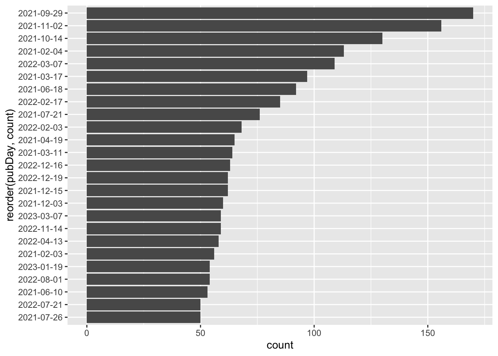
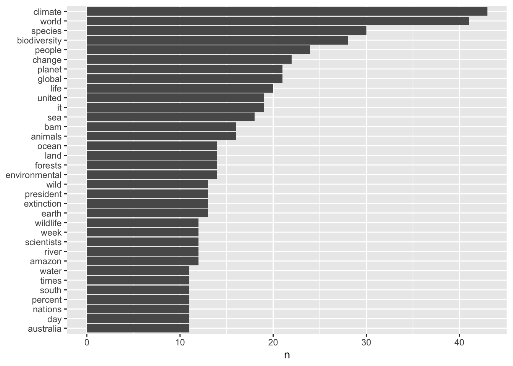
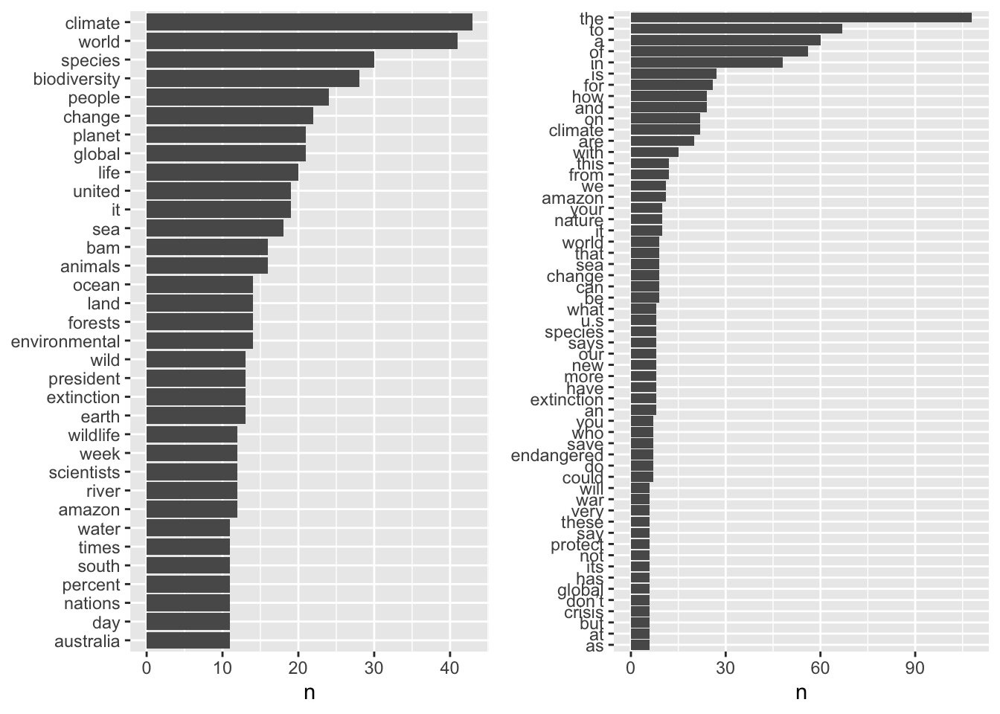

#create the query url
url <- paste("http://api.nytimes.com/svc/search/v2/articlesearch.json?q=haaland&api-key=",API_KEY, sep ="")
#send the request, receive the response, and flatten
t <- fromJSON(url, flatten = T)Examining Word Frequencies in NYT Biodiversity articles
NLP
R
This post uses the NYT API to access biodiversity-related articles to perform some transformations and analyze word frequencies
term2 <- "biodiversity" # Need to use $ to string together separate terms
begin_date2 <- "20210120"
end_date2 <- "20230401"
#construct the query url using API operators
baseurl2 <- paste0("http://api.nytimes.com/svc/search/v2/articlesearch.json?q=",term2,"&begin_date=",begin_date2,"&end_date=",end_date2,"&facet_filter=true&api-key=","NTKBHbsb6XFEkGymGumAiba7n3uBvs8V", sep="")
#examine our query url
baseurl2[1] "http://api.nytimes.com/svc/search/v2/articlesearch.json?q=biodiversity&begin_date=20210120&end_date=20230401&facet_filter=true&api-key=NTKBHbsb6XFEkGymGumAiba7n3uBvs8V"#dig into the JSON object to find total hits
initialQuery2 <- fromJSON(baseurl2)
maxPages <- round((initialQuery2$response$meta$hits[1] / 20)-1)
#initiate a list to hold results of our for loop
pages2 <- list()
#loop
for(i in 0:maxPages){
nytSearch2 <- fromJSON(paste0(baseurl2, "&page=", i), flatten = TRUE) %>% data.frame()
message("Retrieving page ", i)
pages2[[i+1]] <- nytSearch2
Sys.sleep(60)
}Retrieving page 0Retrieving page 1Retrieving page 2Retrieving page 3Retrieving page 4Retrieving page 5Retrieving page 6Retrieving page 7Retrieving page 8Retrieving page 9Retrieving page 10Retrieving page 11Retrieving page 12Retrieving page 13Retrieving page 14Retrieving page 15Retrieving page 16Retrieving page 17Retrieving page 18Retrieving page 19Retrieving page 20Retrieving page 21Retrieving page 22Retrieving page 23#need to bind the pages and create a tibble from nytDat
df2 <- rbind.fill(pages2)
saveRDS(df2, "nyt_df2.rds")nytDat2 <- readRDS("nyt_df2.rds")
dim(nytDat2)[1] 240 33df2 <- nytDat2We will now recreate the publications per day and word frequency plots using the first paragraph. This time we filter on the response.docs.news_desk variable to winnow out irrelevant results. We will then perform some standard transformations - filtering out numbers etc.
Publications per day
paragraph2 <- names(nytDat2)[6]
tokenized2 <- nytDat2 %>%
unnest_tokens(word, paragraph2)
# Remove numbers
clean_tokens2 <- str_remove_all(tokenized2$word, "[:digit:]")
# Remove apostrophes
clean_tokens2 <- gsub("’s", '', clean_tokens2)
tokenized2$clean <- clean_tokens2
#remove the empty strings
tib2 <-subset(tokenized2, clean!="")
#reassign
tokenized2 <- tib2ppd <- tokenized2 %>%
mutate(pubDay=gsub("T.*","",response.docs.pub_date)) %>%
filter(response.docs.news_desk %in% c("Climate", "Science")) |>
group_by(pubDay) %>%
summarise(count=n()) %>%
filter(count >= 50) %>%
ggplot() +
geom_bar(aes(x=reorder(pubDay, count), y=count), stat="identity") +
coord_flip()
ppd
Word frequency
data(stop_words)
stop_words# A tibble: 1,149 × 2
word lexicon
<chr> <chr>
1 a SMART
2 a's SMART
3 able SMART
4 about SMART
5 above SMART
6 according SMART
7 accordingly SMART
8 across SMART
9 actually SMART
10 after SMART
# … with 1,139 more rowstokenized2 <- tokenized2 %>%
anti_join(stop_words)Joining with `by = join_by(word)`wf <- tokenized2 %>%
count(clean, sort = TRUE) %>%
filter(n > 10) %>%
mutate(clean = reorder(clean, n)) %>%
ggplot(aes(n, clean)) +
geom_col() +
labs(y = NULL)
wf
Now, we’ll recreate the publications per day and word frequency plots using the headlines variable (response.docs.headline.main) and examine the differences between the words appearing in the titles and the bodies of the text.
Publications per day
headline <- names(nytDat2)[20]
token_headlines <- nytDat2 %>%
unnest_tokens(word, headline)
head(token_headlines[,"word"])[1] "why" "tiny" "ponds" "and" "singing" "frogs" head(token_headlines$word)[1] "why" "tiny" "ponds" "and" "singing" "frogs" #remove the empty strings
tib3 <-subset(token_headlines, word!="")
#reassign
token_headlines <- tib3data(stop_words)
stop_words# A tibble: 1,149 × 2
word lexicon
<chr> <chr>
1 a SMART
2 a's SMART
3 able SMART
4 about SMART
5 above SMART
6 according SMART
7 accordingly SMART
8 across SMART
9 actually SMART
10 after SMART
# … with 1,139 more rowstoken_headlines <- token_headlines %>%
anti_join(stop_words)Joining with `by = join_by(word)`ppd2 <- token_headlines %>%
mutate(pubDay=gsub("T.*","",response.docs.pub_date)) %>%
filter(response.docs.news_desk %in% c("Climate", "Science")) |>
group_by(pubDay) %>%
summarise(count=n()) %>%
filter(count >= 8) %>%
ggplot() +
geom_bar(aes(x=reorder(pubDay, count), y=count), stat="identity") +
coord_flip()Word frequency
#reassign
token_headlines <- tib3
wf2 <- token_headlines %>%
count(word, sort = TRUE) %>%
filter(n > 5) %>%
mutate(word = reorder(word, n)) %>%
ggplot(aes(n, word)) +
geom_col() +
labs(y = NULL)gridExtra::grid.arrange(wf, wf2, ncol=2)
The word frequencies in the headlines and first paragraphs within NYT “biodiversity” articles are very similar. Virtually all of the words that appear in the headlines also appear in the first paragraph.
Citation
BibTeX citation:
@online{bartnik2023,
author = {Bartnik, Andrew},
title = {Examining {Word} {Frequencies} in {NYT} {Biodiversity}
Articles},
date = {2023-07-31},
url = {https://andrewbartnik.github.io/Portfolio/ocean-modeling},
langid = {en}
}
For attribution, please cite this work as:
Bartnik, Andrew. 2023. “Examining Word Frequencies in NYT
Biodiversity Articles.” July 31, 2023. https://andrewbartnik.github.io/Portfolio/ocean-modeling.